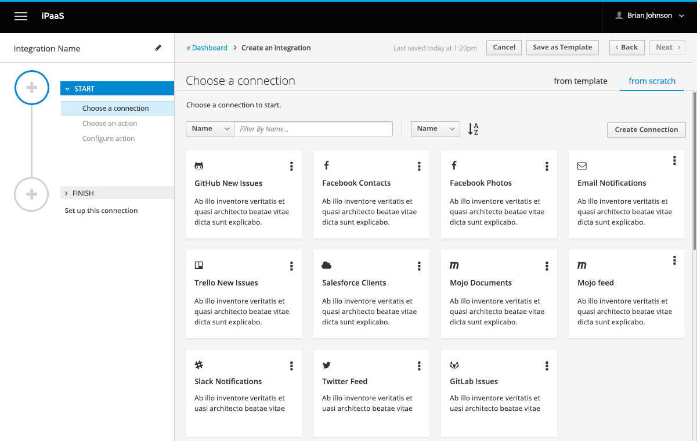

Introduction
This guide assumes that you are either a developer or contributor of Syndesis. If you are looking for a guide to teach you the ins and outs of Syndesis and how to use it, please refer to the User Guide.
You must replace meowmeowmeow with your personal API key.
Backend
How to Use this Guide
You may have noticed some tabs on the right-hand side. These tabs are there to assist you with the different areas involved in Syndesis, and how they pertain to each model.
Architecture
A visual diagram of the Syndesis architecture is currently underway.
Syndesis can be run on OpenShift or Kubernetes, on the cloud or on premises. Under the hood it uses Apache Camel magic to allow for a seamless integration between a wide array of web services, along with the flexibility to create new Camel connectors for your own custom needs, should we not already provide them OOTB.
The UI is built with Angular 2, TypeScript, and Webpack.
The backend is written mostly in Java, using open source technologies like Camel.
Mapping UI Design to REST Domain Model
UX 2
<img src="https://cloud.githubusercontent.com/assets/3844502/24225759/9d8ebdd6-0f38-11e7-8c76-8d6ce48dda5f.jpg">
Getting Started
Syndesis API
The API can be run locally or you can use the staging API. If you’ll strictly be working on the UI, or just want to get the app running as quickly as possible, we recommend using the API staging server rather than running it locally.
{
"apiEndpoint": "https://syndesis-staging.b6ff.rh-idev.openshiftapps.com/api/v1",
"title": "Syndesis",
"datamapper": {
"baseJavaServiceUrl": "https://localhost:8585/v2/atlas/java/",
"baseMappingServiceUrl": "https://localhost:8585/v2/atlas/"
},
"oauth": {
"clientId": "syndesis-ui",
"scopes": [],
"oidc": true,
"hybrid": true,
"issuer": "https://syndesis-staging.b6ff.rh-idev.openshiftapps.com/auth/realms/syndesis",
"auto-link-github": true
}
}
Staging API
This is the easiest way to get started with making contributions in the UI. Fork the syndesis-ui repository to your desktop, and look for the ./src/config-example.json file. Copy and paste it, renaming it to config.json. Open it up and toward the top it should look something like the example provided on the right.
The oauth.issuer property should also be changed to https://syndesis-staging.b6ff.rh-idev.openshiftapps.com/auth/realms/syndesis.
Locally
If you’d like to run the API locally, follow the instructions in the README.md file here.
Syndesis UI
- Fork the
syndesis-uilocated here. - Clone your fork to your desktop.
- Build with
yarn. - Run with
ng serve.
Navigate to http://localhost:4200 in your browser.
Data Mapper
To set up the data mapper, be sure to include the dataMapper property in your config.json file.
{
"datamapper": {
"baseJavaServiceUrl": "https://localhost:8585/v2/atlas/java/",
"baseMappingServiceUrl": "https://localhost:8585/v2/atlas/"
}
}
Tests
System Tests
This is the repository you can clone to run system-wide tests. These tests are meant to be run against OpenShift (either within or pointing to an Openshift installation).
For instance, to run them locally you’d run the following:
mvn clean test
E2E Tests
Our E2E tests use Cucumber and Gherkin. Cucumber is a great way to make sure that tests follow the narrative for each sprint.
Unit Tests
Running Test Suites Individually
Be sure to click on the QE tabs on the right-hand side to learn how to run each suite of tests individually. We try to write unit tests for all repositories, both on the frontend and the backend.
Connections
Everyday in your day-to-day operations you use several web services, such as Salesforce, to complete tasks. In Syndesis, we refer to configured versions of each web service and a specific task, collectively, as a Connection.
An example of a Connection is a “Twitter mention”, configured with your Twitter account details. As you’ll see later, you use one or more Connections to create an Integration (more on this later).
Creating Connections
There are a few places you can go to create a Connection.
- From the Dashboard, scroll down to the Dashboard: Connections section, and click on the Create Connection button on the right-hand side OR navigate to Connections on the left-hand navigation bar, and then click on the Create Connection button on the upper right-hand side.
- Select a web service from the list available.
- Configure your web service.
- Validate it to make sure the Connection has been configured properly.
- Give your Connection a name and description. If you don’t, one will be generated for you automatically.
- Press the Create Connection button.
- $$ PROFIT!
If you navigate to the Connection List you should now see your newly created Connection.
Connection List
In the Connection List you can see a list of Connections you’ve created. This is also where you can select a Connection to edit it.
Editing Connections
Editing a Connection is really simple. Go to the Connection List, locate the Connection you’d like to edit, and click on it. You can also select the kabob on the right-hand side of the Connection card, which opens up a small dropdown menu, and select ‘Edit Connection’.
Then, simply make your changes and save them.
Integrations
Integrations use one or more Connections to, well, integrate data from the web services you use. As mentioned above, Connections are pre-configured actions for your web services (e.g. Twitter mention). You can think of Integrations as a knot that results from tying the ends of two ropes together, where each rope is a Connection.
The beauty of Integrations in Syndesis is that not only can you integrate actions from multiple web services, but you can also work with the data gathered from each Connection using the concept of Steps. When you create an Integration and choose the Connections you’d like to integrate, you are then prompted to either add in another Connection or add a Step in between. An example of a Step might be data mapping or logging.
Creating Integrations
When Integrations are created, they are activated automatically and persisted on GitHub. Once your Integration is deployed, you will be able to see that a new repository has been created on the authorized GitHub account.
Create Integration: From Scratch

To create an Integration, click Integrations on the left-hand navigation bar. Then click on the Create Integration button on the upper right-hand side.
Integration List
In the Integration List you can see a list of Integrations you’ve created. This is also where you can monitor their overall metrics, or select an Integration to edit it.
Integration List: Empty
This is the state of the Integration List before you have created any Integrations.
Tags
Tags are great for keeping things organized. At the moment, you can assign multiple Tags to Integrations, Connections, and Templates. In the near future, you will also be able to sort by Tags.
Creating Tags
When you are creating an Integration, you will see a field for Tags. Start typing and you’ll see a list of suggestions based on existing Tags. If the Tag you want doesn’t already exist, simply type the name of the Tag you would like to create, and press Enter–it will create the Tag for you.
Managing Tags
At the moment, it is not possible to manage Tags. Once they are created they cannot be edited. We will be adding in the ability to edit and manage your Tags in a future release.
Templates
Templates will be available in a future release.
Contributing
We love our contributors! If you’d like to get started with contributing to the project, click on the tab on the right hand side for the area you’re interested in contributing to.
If you’d like to contribute to the website, please check out the README here. The template we use is Slate, with some customizations.
We have a [Style Guide](https://github.com/syndesisio/syndesis-ui-style-guide) for the UI that should be followed when contributing. In addition, we follow the [official Angular 2 Style Guide](https://angular.io/styleguide) when possible.